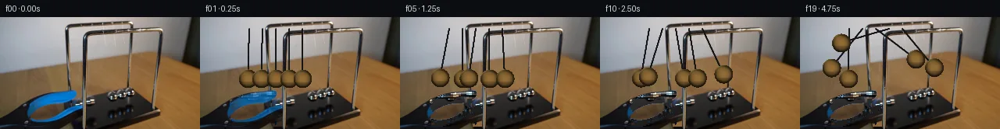

![首帧]()

Round 00
2026-11-05T13:42:21.422215+00:00像素候选变化代码 +651/−0inspection 更新
pixels dd289fe2cc937fc0 · code aff88a99d25254cd
查看本轮 generate.py 真实 diff
--- previous/generate.py
+++ current/generate.py
@@ -0,0 +1,651 @@
+#!/usr/bin/env python3
+"""
+generate.py — Newton's Cradle Animation
+Renders 20 frames (256×144, 4 fps) of a Newton's cradle demonstration.
+Frame 00 = first_frame.png exactly. Frames 01-19 = physics-based animation.
+
+Method: Extract ball templates from the photorealistic first frame,
+copy/paste them at physics-computed pendulum positions, inpaint the
+grabber tool area with sampled background, and draw strings procedurally.
+"""
+
+import numpy as np
+from PIL import Image
+import os, sys
+
+# ── Configuration ──────────────────────────────────────────────────
+W, H = 256, 144
+FRAMES = 20
+FPS = 4
+OUT_DIR = "frames"
+os.makedirs(OUT_DIR, exist_ok=True)
+os.makedirs(".tmp", exist_ok=True)
+
+# ── Load first frame ───────────────────────────────────────────────
+src = Image.open("first_frame.png")
+src_arr = np.array(src).astype(np.float64) # work in float
+assert src_arr.shape == (H, W, 3), f"Expected (144,256,3), got {src_arr.shape}"
+
+# ── Scene parameters (measured from first_frame.png) ───────────────
+# Frame bar pivot points (where strings attach to top bar)
+PIVOT_Y = 15
+pivot_x = [63, 80, 97, 114, 131] # x-coords of 5 pivots
+
+# Ball rest positions (centers when hanging straight down)
+BALL_REST_Y = 79
+ball_rest_x = [63, 80, 97, 114, 131]
+
+# String length (pixels): distance from pivot to ball center at rest
+STRING_LEN = BALL_REST_Y - PIVOT_Y # ≈ 64
+
+# Ball radius (pixels) — measured from the photorealistic render
+BALL_RADIUS = 10
+
+# Grabber region (to be inpainted)
+GRABBER_X_MIN, GRABBER_X_MAX = 38, 108
+GRABBER_Y_MIN, GRABBER_Y_MAX = 90, 140
+
+# ── Extract ball template from first frame ─────────────────────────
+# Use ball 4 (center resting ball at x=114, y=79) as the clean template
+# because it's well-lit, not overlapping with other elements
+template_cx, template_cy = ball_rest_x[3], BALL_REST_Y
+template_r = BALL_RADIUS + 2 # slightly larger to include edge shading
+
+def extract_ball_template(arr, cx, cy, r):
+ """Extract a square patch containing the ball, with alpha mask."""
+ x0 = max(0, int(cx - r - 1))
+ x1 = min(W, int(cx + r + 2))
+ y0 = max(0, int(cy - r - 1))
+ y1 = min(H, int(cy + r + 2))
+ patch = arr[y0:y1, x0:x1].copy()
+ # Create circular alpha mask
+ ph, pw = patch.shape[:2]
+ yy, xx = np.mgrid[0:ph, 0:pw]
+ dy = yy - (cy - y0)
+ dx = xx - (cx - x0)
+ dist = np.sqrt(dx**2 + dy**2)
+ alpha = np.clip(1.0 - (dist - r + 1.5), 0, 1)
+ alpha = np.minimum(alpha * 3, 1.0) # soft edge
+ return patch, alpha, (y0, x0, y1, x1)
+
+ball_template, ball_alpha, _ = extract_ball_template(src_arr, template_cx, template_cy, template_r)
+
+# ── Inpaint grabber area: sample background colors ─────────────────
+def create_background_plate(arr):
+ """Create a version of the first frame with the grabber region inpainted."""
+ bg = arr.copy()
+
+ # Sample background wall colors from regions away from the grabber
+ # Wall: y=20-50 area (above the balls/grabber)
+ wall_region = arr[20:55, 110:200] # right side, clear of grabber
+ wall_avg = wall_region.mean(axis=(0,1))
+
+ # Table: sample from right side bottom
+ table_region_right = arr[110:143, 150:250]
+
+ # For the grabber area, we'll fill with wall gradient
+ for gy in range(GRABBER_Y_MIN, min(GRABBER_Y_MAX + 1, H)):
… diff truncated; 564 more lines …